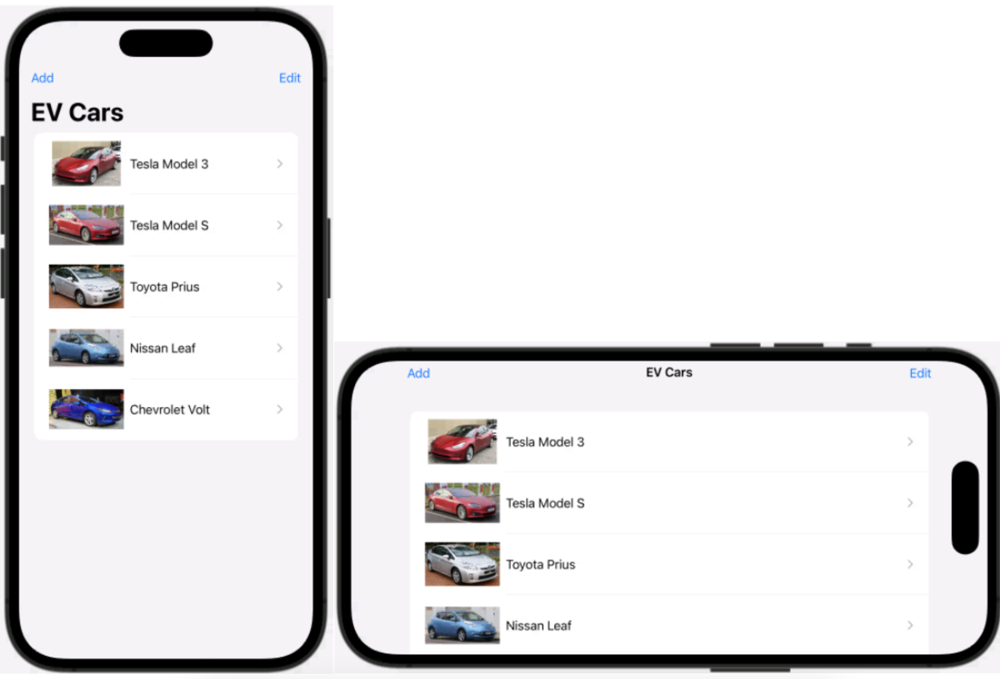
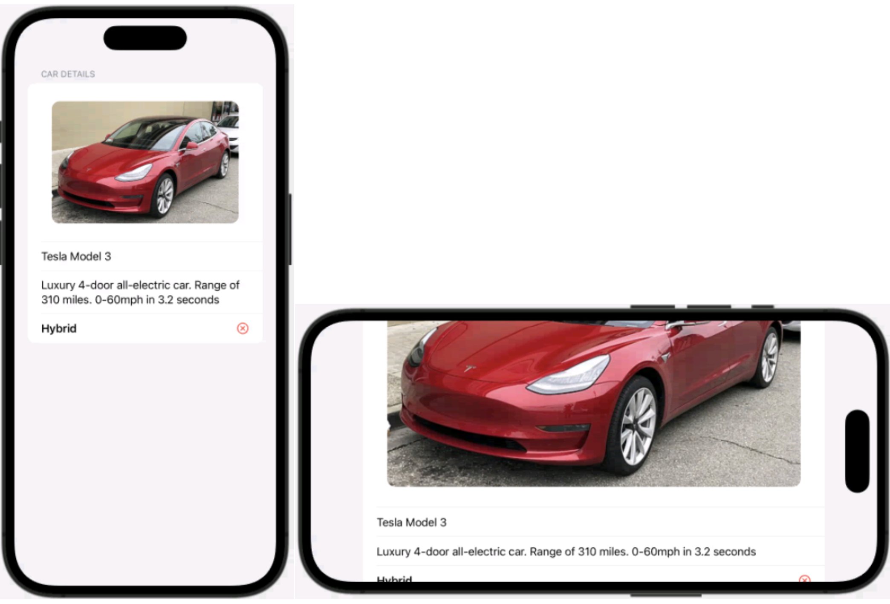
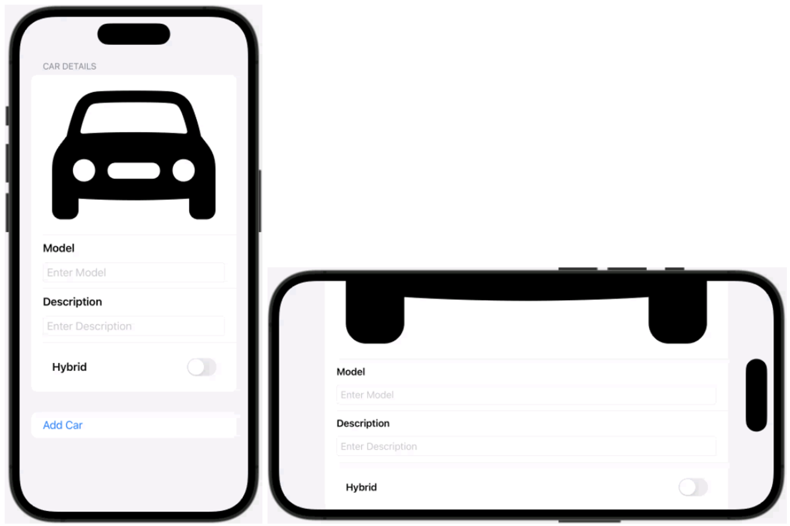
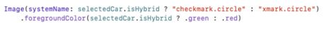
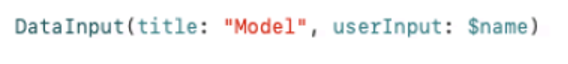

Car Store
Mise en situation
Compléter le projet en utilisant les différentes « View » comme les « List », « Navigation » et « Form » vues en
classe.
Instructions
- Compléter le fichier « ContentView.swift » afin qu’il représente le modèle ci-dessous.
- a. Vous devez afficher la liste des voitures.
- b. Vous devez ajouter un bouton « Add » menant vers le fichier « AddNewCar.swift ».
- c. Vous devez ajouter un bouton « Edit » permettant de déplacer les items dans la liste.
- d. Il faut pouvoir sélectionner une voiture afin de voir les détails de celle-ci.
- e. Vous devez ajouter un effet de « scroll » pour lorsque la liste est trop longue.
- 
- Compléter le fichier « CarDetail.swift » afin qu’il représente le modèle ci-dessous.
- a. Vous devez ajouter un effet de « scroll » pour lorsque la liste est trop longue.
-

- Compléter le fichier « AddNewCar.swift » afin qu’il représente le modèle ci-dessous.
- a. La voiture doit s’ajouter à la liste de voitures lorsque le formulaire est rempli et que le bouton « Add Car » est cliqué.
- b. Vous devez ajouter un effet de « scroll » pour lorsque la liste est trop longue.
-

Informations supplémentaires
Dans le fichier « CarDetail.swift », il y a une icône qui indique si la voiture est hybride ou non. Voici comment vous pouvez afficher cette icône.

Voici comment utiliser la fonction « DataInput » dans le fichier « AddNewCar.swift ».

Dans le fichier « ContentView.swift », vous pouvez utiliser la fonction « ListCell » afin d’afficher les items dans la liste.
Télécharger le projet de base
Télécharger la solution